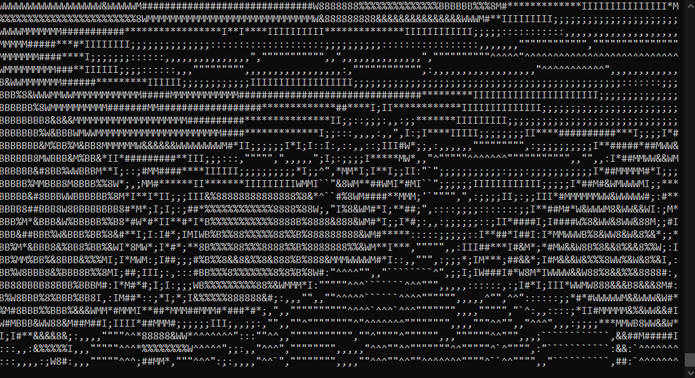

Een klein programma dat ik in mijn vrije tijd voor de lol heb gemaakt,
het is een eenvoudig programma dat in de terminal werkt
en zet de video-invoer van je camera om in tekst characters. Het doet dit door elke pixel te controleren die
camera geeft. Het optellen van de rgb-waarden van de pixel
ze te delen door 47,875 (afhankelijk van hoeveel
tekens die je wilt) dat een getal van 0 tot 15 geeft, waarbij
0 het minst helder is en 15 het
meest heldere karakter.
Het geeft de camara dit echt coole effect waardoor het lijkt op ascii art